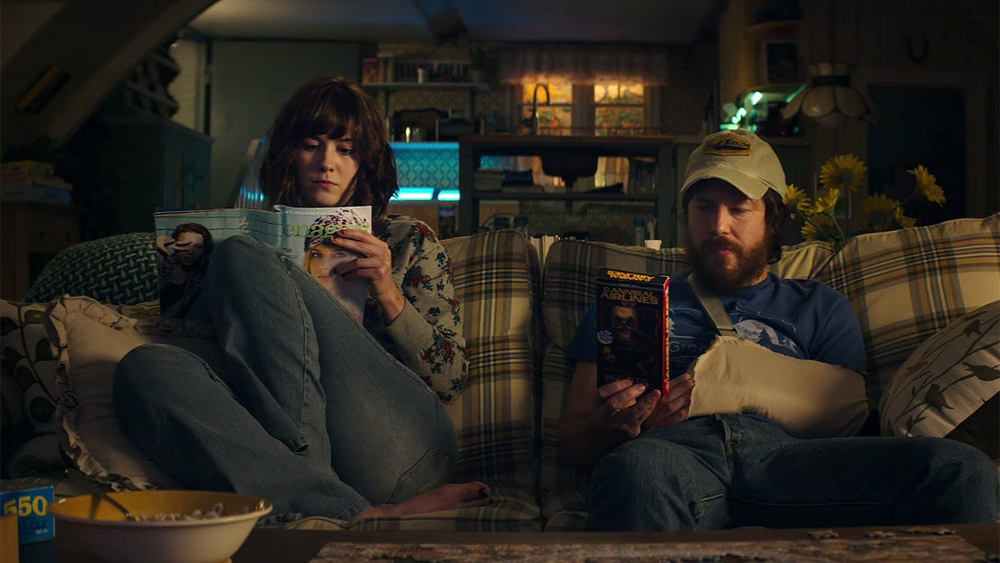
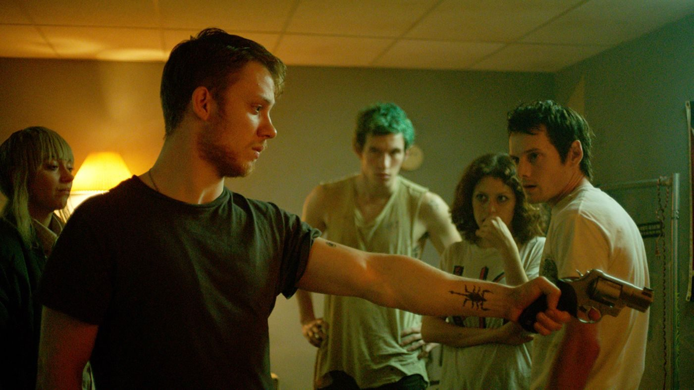
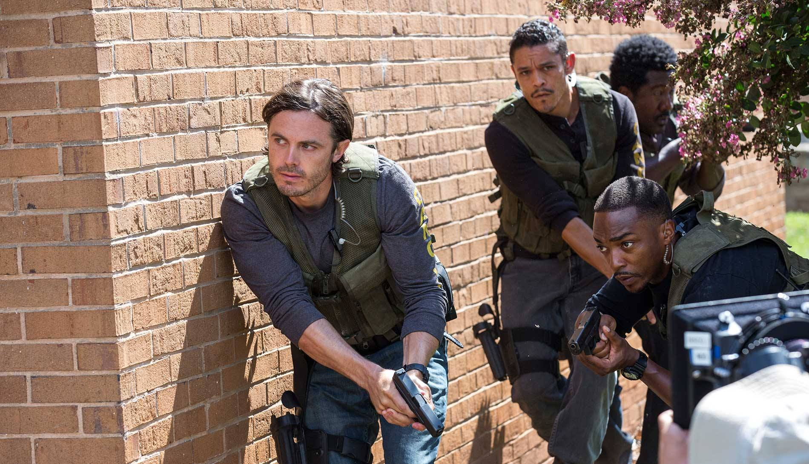
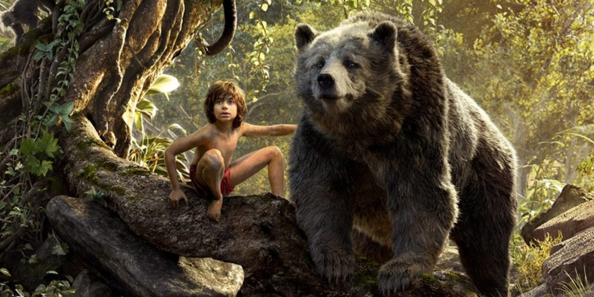

Le top des films 2016 (à fin juin)
On démarre l'année 2016 en fanfare, avec un film fantastique et un très bon film.
Les "pas encore vus"
Carol, Elser, Les chevaliers blancs, 45 years, Brooklyn, Demolition, Les innocentes, Hardcore Henry, Trumbo, Elle, Going in Style, The nice guys, The Neon Demon, Bolgen, High Rise, Suicide Squad, The BFG, The shallows, Jason Bourne, Tony Erdmann, War dogs,
Le top 2016 (à fin juin)
1/ The Revenant, bande-annonce, score 8/10, "Voilà donc la première claque de 2016. Je pourrais même lui mettre un peu plus tellement il m'a impressionné. Une histoire simple certes, basé sur des faits réels, mais des acteurs ultra-investis, et un parti de mise en scène qui vous transporte au coeur de l'action. Pour ceux qui apprécient, ce sera vertigineux. Pour les autres, ce sera probablement un peu long et simpliste ;-)"

2/ Steve Jobs, bande-annonce, score 8/10, "Deuxième claque de l'année, le nouveau film de Danny Boyle, scénarisé par Aaron Sorkin, ou comment faire une biographie sur base de trois moments de la vie Steve Jobs, trois moments qui se déroulent avant la présentation de nouveau produit. Les dialogues de Sorkin claquent comme d'habitude, ca va vite , c'est intelligent. Fassbender, Winslet sont formidables. Et la réalisation de Danny Boyle fait moins dans le show que d'habitude, pour être plus précise. Le film est un four aux USA, à partir quelques nominations ultra-méritées par-ci par-là. Mais clairement, c'est une petite pépite."
3/ Spotlight, bande-annonce, score 7,5/10, "Ce qui est épatant dans le cinéma américain, c'est justement ce genre de film. A côté de sortie audacieuse (Steve Jobs, The Revenant), ce cinéma arrive chaque à nous sortir des film de facture classique (un polar, un thriller et dans le cas présent une enquête journalistique), qu'on se dit merde, ils sont bons quand même. Spotlight, c'est cela. Basé sur des faits réels, le film déroule un casting parfait (particulièrement Mark Ruffalo, comme souvent d'ailleurs) et nous, ... on pense à All the President's Men, et on se dit qu'on manque de film comme cela chez nous".**
4/ Room, bande-annonce, score 7/10, "Difficile de parler du film sans déflorer l'intrigue. Grand film? Non bon film, mais grandes interprétations à la fois de Brie Larson et surtout ~~de la petite fille~~ du petit garçon."

5/ 10 Cloverfield Lane, bande-annonce, score 6,5/10

6/ Green Room, bande-annonce, score 6,5/10

7/Les premiers, les derniers, bande-annonce, score 6,5/10

8/ Deadpool,bande-annonce, score 6,5/10

9/ Triple 9, bande-annonce, score 6,5/10

10/ The Jungle book, bande-annonce, score 6,5/10, "Forcément, en dehors des prises de vues réelles et de la motion capture, cela manque d'originalité, mais le matériau de base est tellement parfait, pourquoi le transformer? Ce remake en motion capture est donc magnifiquement réalisé, drôle et souvent impressionnant en plus d'être immersif."
11/ The hateful eight, bande-annonce, score 6,5/10, "Pour le moment, le dernier Tarantino dans le top, mais on est en janvier, et donc il n'y restera pas. Pas que le dernier Tarantino soit mauvais, loin de là, mais avec toutes ses qualités (un excellent début en 70mm dans la neige, un bon casting, un huit clos maîtrisé), il a également de grosses boursouflures (Trop long, trop frimeur). En fait, depuis des années, c'est le premier Tarantino qui déçoit."
Mentions honorables
Captain America Civil War, bande-annonce
Grimsby, bande-annonce
Hush, bande-annonce
Commentaires 2
Sabine, 2016-06-30 18:02
Merci Patrice pour ce classement très intéressant. Pour ma part je remplacerai S.Jobs par Spotlight puis Room puis Steve Jobs.
roulive, 2016-06-30 18:06
Je pensais que tu préférerais enterrer Spotlight en fond de classement vu le sujet ;)